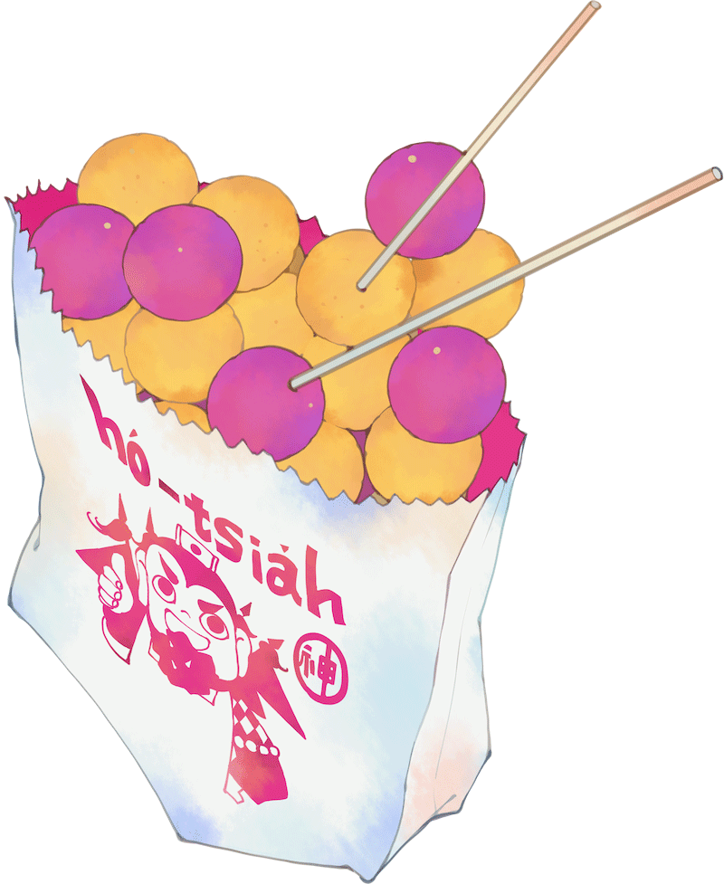

Fumettista e illustratrice.



Durante l’estate del suo terzo anno di università a Taipei, Hsia Chih-Hsun decide di portare Chen Nuan-Nuan, una compagna di corso che aveva una cotta per lui, alla sua città natale Daxi. Mancava da quella città da sette anni, e lì aveva lasciato la sua infanzia dimenticata.
Poco a poco, forse guidato dagli dei, Chih-Hsun ritrova i propri ricordi, i compagni di gioco d'infanzia, i familiari perduti, le promesse che non sono state mantenute…
Il 24 giugno, secondo il calendario lunare, corrisponde al pellegrinaggio per la nascita di Guan Gong, un secondo capodanno per gli abitanti di Daxi. Zuo Hsuan ha speso due anni raccogliendo materiali, visitando Daxi di persona, riuscendo così a raffigurare delicatamente scene ed emozioni del luogo.
Benvenuti nella terra degli dei, godetevi i sapori e i ricordi di questo posto!
* Diritti d'autore francesi, vietnamiti, giapponesi, italiani (Jundo) venduti
* Diritti TV venduti